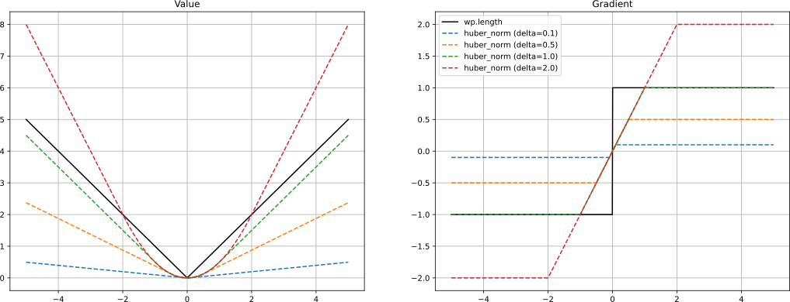
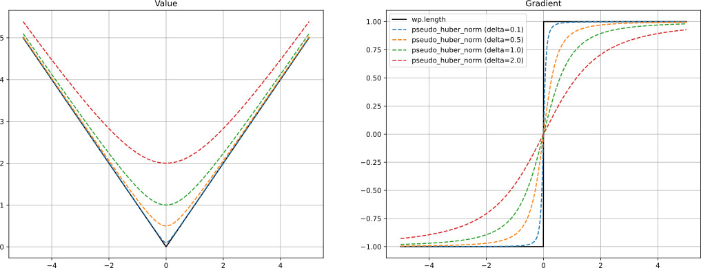

Kernel Reference#
Scalar Types#
Vector Types#
Generic Types#
- class warp.Int#
- class warp.Float#
- class warp.Scalar#
- class warp.Vector#
- class warp.Matrix#
- class warp.Quaternion#
- class warp.Transformation#
- class warp.Array#
Scalar Math#
- warp.clamp(x: Scalar, low: Scalar, high: Scalar) Scalar#
Clamp the value of
xto the range [low, high].
- warp.abs(x: Vector[Any, Scalar]) Vector[Any, Scalar]
Return the absolute values of the elements of
x.
- warp.acos(x: Float) Float#
Return arccos of
xin radians. Inputs are automatically clamped to [-1.0, 1.0].
- warp.asin(x: Float) Float#
Return arcsin of
xin radians. Inputs are automatically clamped to [-1.0, 1.0].
- warp.atan2(y: Float, x: Float) Float#
Return the 2-argument arctangent, atan2, of the point
(x, y)in radians.
- warp.round(x: Float) Float#
Return the nearest integer value to
x, rounding halfway cases away from zero.This is the most intuitive form of rounding in the colloquial sense, but can be slower than other options like
warp.rint(). Differs fromnumpy.round(), which behaves the same way asnumpy.rint().
- warp.rint(x: Float) Float#
Return the nearest integer value to
x, rounding halfway cases to nearest even integer.It is generally faster than
warp.round(). Equivalent tonumpy.rint().
- warp.trunc(x: Float) Float#
Return the nearest integer that is closer to zero than
x.In other words, it discards the fractional part of
x. It is similar to castingfloat(int(a)), but preserves the negative sign whenxis in the range [-0.0, -1.0). Equivalent tonumpy.trunc()andnumpy.fix().
- warp.frac(x: Float) Float#
Retrieve the fractional part of
x.In other words, it discards the integer part of
xand is equivalent tox - trunc(x).
- warp.isfinite(a: Vector[Any, Scalar]) bool
Return
Trueif all elements of the vectoraare finite, otherwise returnFalse.
- warp.isfinite(a: Quaternion[Scalar]) bool
Return
Trueif all elements of the quaternionaare finite, otherwise returnFalse.
- warp.isfinite(a: Matrix[Any, Any, Scalar]) bool
Return
Trueif all elements of the matrixaare finite, otherwise returnFalse.
- warp.isnan(a: Vector[Any, Scalar]) bool
Return
Trueif any element of the vectorais NaN, otherwise returnFalse.
- warp.isnan(a: Quaternion[Scalar]) bool
Return
Trueif any element of the quaternionais NaN, otherwise returnFalse.
- warp.isnan(a: Matrix[Any, Any, Scalar]) bool
Return
Trueif any element of the matrixais NaN, otherwise returnFalse.
- warp.isinf(a: Scalar) bool#
Return
Trueifais positive or negative infinity, otherwise returnFalse.
- warp.isinf(a: Vector[Any, Scalar]) bool
Return
Trueif any element of the vectorais positive or negative infinity, otherwise returnFalse.
- warp.isinf(a: Quaternion[Scalar]) bool
Return
Trueif any element of the quaternionais positive or negative infinity, otherwise returnFalse.
Vector Math#
- warp.dot(a: Vector[Any, Scalar], b: Vector[Any, Scalar]) Scalar#
Compute the dot product between two vectors.
- warp.dot(a: Quaternion[Float], b: Quaternion[Float]) Float
Compute the dot product between two quaternions.
- warp.ddot(a: Matrix[Any, Any, Scalar], b: Matrix[Any, Any, Scalar]) Scalar#
Compute the double dot product between two matrices.
- warp.argmin(a: Vector[Any, Scalar]) uint32#
Return the index of the minimum element of a vector
a. [1]
- warp.argmax(a: Vector[Any, Scalar]) uint32#
Return the index of the maximum element of a vector
a. [1]
- warp.cross(a: Vector[3, Scalar], b: Vector[3, Scalar]) Vector[3, Scalar]#
Compute the cross product of two 3D vectors.
- warp.skew(vec: Vector[3, Scalar]) Matrix[3, 3, Scalar]#
Compute the skew-symmetric 3x3 matrix for a 3D vector
vec.
- warp.length(a: Quaternion[Float]) Float
Compute the length of a quaternion
a.
- warp.length_sq(a: Quaternion[Scalar]) Scalar
Compute the squared length of a quaternion
a.
- warp.normalize(a: Vector[Any, Float]) Vector[Any, Float]#
Compute the normalized value of
a. Iflength(a)is 0 then the zero vector is returned.
- warp.normalize(a: Quaternion[Float]) Quaternion[Float]
Compute the normalized value of
a. Iflength(a)is 0, then the zero quaternion is returned.
- warp.transpose(a: Matrix[Any, Any, Scalar]) Matrix[Any, Any, Scalar]#
Return the transpose of the matrix
a.
- warp.diag(vec: Vector[Any, Scalar]) Matrix[Any, Any, Scalar]#
Returns a matrix with the components of the vector
vecon the diagonal.
- warp.get_diag(mat: Matrix[Any, Any, Scalar]) Vector[Any, Scalar]#
Returns a vector containing the diagonal elements of the square matrix
mat.
- warp.matrix( ) Matrix[4, 4, Float]#
Construct a 4x4 transformation matrix that applies the transformations as Translation(pos)*Rotation(rot)*Scaling(scale) when applied to column vectors, i.e.: y = (TRS)*x
Warning
This function has been deprecated in favor of
warp.math.transform_compose().
- warp.matrix( ) Matrix[Any, Any, Scalar]
Construct a matrix. If the positional
arg_typesare not given, then matrix will be zero-initialized.
- warp.matrix_from_cols(*args: Vector[Any, Scalar]) Matrix[Any, Any, Scalar]#
Construct a matrix from column vectors.
- warp.matrix_from_rows(*args: Vector[Any, Scalar]) Matrix[Any, Any, Scalar]#
Construct a matrix from row vectors.
- warp.identity(n: int32, dtype: Scalar) Matrix[Any, Any, Scalar]#
Create an identity matrix with shape=(n,n) with the type given by
dtype.
- warp.svd3( ) Tuple[Matrix[3, 3, Float], Vector[3, Float], Matrix[3, 3, Float]]#
Compute the SVD of a 3x3 matrix
A. The singular values are returned insigma, while the left and right basis vectors are returned inUandV.
- warp.svd3( ) None
Compute the SVD of a 3x3 matrix
A. The singular values are returned insigma, while the left and right basis vectors are returned inUandV.
- warp.svd2( ) Tuple[Matrix[2, 2, Float], Vector[2, Float], Matrix[2, 2, Float]]#
Compute the SVD of a 2x2 matrix
A. The singular values are returned insigma, while the left and right basis vectors are returned inUandV.
- warp.svd2( ) None
Compute the SVD of a 2x2 matrix
A. The singular values are returned insigma, while the left and right basis vectors are returned inUandV.
- warp.qr3( ) Tuple[Matrix[3, 3, Float], Matrix[3, 3, Float]]#
Compute the QR decomposition of a 3x3 matrix
A. The orthogonal matrix is returned inQ, while the upper triangular matrix is returned inR.
- warp.qr3( ) None
Compute the QR decomposition of a 3x3 matrix
A. The orthogonal matrix is returned inQ, while the upper triangular matrix is returned inR.
- warp.eig3( ) Tuple[Matrix[3, 3, Float], Vector[3, Float]]#
Compute the eigendecomposition of a 3x3 matrix
A. The eigenvectors are returned as the columns ofQ, while the corresponding eigenvalues are returned ind.
- warp.eig3( ) None
Compute the eigendecomposition of a 3x3 matrix
A. The eigenvectors are returned as the columns ofQ, while the corresponding eigenvalues are returned ind.
- warp.math.norm_l1(v)#
Computes the L1 norm of a vector v.
\[\|v\|_1 = \sum_i |v_i|\]
- warp.math.norm_l2(v)#
Computes the L2 norm of a vector v.
\[\|v\|_2 = \sqrt{\sum_i v_i^2}\]
- warp.math.norm_huber(v, delta=1.0)#
Computes the Huber norm of a vector v with a given delta.
\[\begin{split}H(v) = \begin{cases} \frac{1}{2} \|v\|^2 & \text{if } \|v\| \leq \delta \\ \delta(\|v\| - \frac{1}{2}\delta) & \text{otherwise} \end{cases}\end{split}\]
- warp.math.norm_pseudo_huber(v, delta=1.0)#
Computes the “pseudo” Huber norm of a vector v with a given delta.
\[H^\prime(v) = \delta \sqrt{1 + \frac{\|v\|^2}{\delta^2}}\]
- warp.math.smooth_normalize(v, delta=1.0)#
Normalizes a vector using the pseudo-Huber norm.
See
norm_pseudo_huber().\[\frac{v}{H^\prime(v)}\]
Quaternion Math#
- warp.quaternion(dtype: Float) Quaternion[Float]#
Construct a zero-initialized quaternion. Quaternions are laid out as [ix, iy, iz, r], where ix, iy, iz are the imaginary part, and r the real part.
- warp.quaternion( ) Quaternion[Float]
Create a quaternion using the supplied components (type inferred from component type).
- warp.quaternion( ) Quaternion[Float]
Create a quaternion using the supplied vector/scalar (type inferred from scalar type).
- warp.quaternion(quat: Quaternion[Float], dtype: Float) Quaternion[Float]
Construct a quaternion of type dtype from another quaternion of a different dtype.
- warp.quat_identity(dtype: Float) quatf#
Construct an identity quaternion with zero imaginary part and real part of 1.0
- warp.quat_from_axis_angle( ) Quaternion[Float]#
Construct a quaternion representing a rotation of angle radians around the given axis.
- warp.quat_to_axis_angle(
- quat: Quaternion[Float],
Extract the rotation axis and angle radians a quaternion represents.
- warp.quat_to_axis_angle(
- quat: Quaternion[Float],
- axis: Vector[3, Float],
- angle: Float,
Extract the rotation axis and angle radians a quaternion represents.
- warp.quat_from_matrix(mat: Matrix[3, 3, Float]) Quaternion[Float]#
Construct a quaternion from a 3x3 matrix.
If the matrix is not a pure rotation, but for example includes scaling or skewing, the result is undefined.
- warp.quat_from_matrix(mat: Matrix[4, 4, Float]) Quaternion[Float]
Construct a quaternion from a 4x4 matrix.
If the top-left 3x3 block of the matrix is not a pure rotation, but for example includes scaling or skewing, the result is undefined.
- warp.quat_rpy(roll: Float, pitch: Float, yaw: Float) Quaternion[Float]#
Construct a quaternion representing a combined roll (z), pitch (x), yaw rotations (y) in radians.
- warp.quat_inverse(quat: Quaternion[Float]) Quaternion[Float]#
Compute quaternion conjugate.
- warp.quat_rotate(
- quat: Quaternion[Float],
- vec: Vector[3, Float],
Rotate a vector by a quaternion.
- warp.quat_rotate_inv(
- quat: Quaternion[Float],
- vec: Vector[3, Float],
Rotate a vector by the inverse of a quaternion.
- warp.quat_slerp(
- a: Quaternion[Float],
- b: Quaternion[Float],
- t: Float,
Linearly interpolate between two quaternions.
- warp.quat_to_matrix(quat: Quaternion[Float]) Matrix[3, 3, Float]#
Convert a quaternion to a 3x3 rotation matrix.
Transformations#
- warp.transformation(
- pos: Vector[3, Float],
- rot: Quaternion[Float],
- dtype: Float,
Construct a rigid-body transformation with translation part
posand rotationrot.
- warp.transform_identity(dtype: Float) transformf#
Construct an identity transform with zero translation and identity rotation.
- warp.transform_get_translation(
- xform: Transformation[Float],
Return the translational part of a transform
xform.
- warp.transform_get_rotation(
- xform: Transformation[Float],
Return the rotational part of a transform
xform.
- warp.transform_multiply(
- a: Transformation[Float],
- b: Transformation[Float],
Multiply two rigid body transformations together.
- warp.transform_point(
- xform: Transformation[Float],
- point: Vector[3, Float],
Apply the transform to a point
pointtreating the homogeneous coordinate as w=1 (translation and rotation).
- warp.transform_point( ) Vector[3, Float]
Apply the transform to a point
pointtreating the homogeneous coordinate as w=1.The transformation is applied treating
pointas a column vector, e.g.:y = mat*point.This is in contrast to some libraries, notably USD, which applies transforms to row vectors,
y^T = point^T*mat^T. If the transform is coming from a library that uses row-vectors, then users should transpose the transformation matrix before calling this method.
- warp.transform_vector(
- xform: Transformation[Float],
- vec: Vector[3, Float],
Apply the transform to a vector
vectreating the homogeneous coordinate as w=0 (rotation only).
- warp.transform_vector( ) Vector[3, Float]
Apply the transform to a vector
vectreating the homogeneous coordinate as w=0.The transformation is applied treating
vecas a column vector, e.g.:y = mat*vec.This is in contrast to some libraries, notably USD, which applies transforms to row vectors,
y^T = vec^T*mat^T. If the transform is coming from a library that uses row-vectors, then users should transpose the transformation matrix before calling this method.
- warp.transform_inverse(
- xform: Transformation[Float],
Compute the inverse of the transformation
xform.
- warp.math.transform_from_matrix(mat)#
Construct a transformation from a 4x4 matrix.
\[\begin{split}M = \begin{bmatrix} R_{00} & R_{01} & R_{02} & p_x \\ R_{10} & R_{11} & R_{12} & p_y \\ R_{20} & R_{21} & R_{22} & p_z \\ 0 & 0 & 0 & 1 \end{bmatrix}\end{split}\]Where:
\(R\) is the 3x3 rotation matrix created from the orientation quaternion of the input transform.
\(p\) is the 3D position vector \([p_x, p_y, p_z]\) of the input transform.
- Parameters:
- Returns:
The transformation.
- Return type:
- warp.math.transform_to_matrix(xform)#
Convert a transformation to a 4x4 matrix.
\[\begin{split}M = \begin{bmatrix} R_{00} & R_{01} & R_{02} & p_x \\ R_{10} & R_{11} & R_{12} & p_y \\ R_{20} & R_{21} & R_{22} & p_z \\ 0 & 0 & 0 & 1 \end{bmatrix}\end{split}\]Where:
\(R\) is the 3x3 rotation matrix created from the orientation quaternion of the input transform.
\(p\) is the 3D position vector \([p_x, p_y, p_z]\) of the input transform.
- Parameters:
xform (Transformation[Float]) – Transformation to convert.
- Returns:
The matrix.
- Return type:
- warp.math.transform_compose(position, rotation, scale)#
Compose a 4x4 transformation matrix from a 3D position, quaternion orientation, and 3D scale.
\[\begin{split}M = \begin{bmatrix} s_x R_{00} & s_y R_{01} & s_z R_{02} & p_x \\ s_x R_{10} & s_y R_{11} & s_z R_{12} & p_y \\ s_x R_{20} & s_y R_{21} & s_z R_{22} & p_z \\ 0 & 0 & 0 & 1 \end{bmatrix}\end{split}\]Where:
\(R\) is the 3x3 rotation matrix created from the orientation quaternion of the input transform.
\(p\) is the 3D position vector \([p_x, p_y, p_z]\) of the input transform.
\(s\) is the 3D scale vector \([s_x, s_y, s_z]\) of the input transform.
- warp.math.transform_decompose(m)#
Decompose a 4x4 transformation matrix into 3D position, quaternion orientation, and 3D scale.
\[\begin{split}M = \begin{bmatrix} s_x R_{00} & s_y R_{01} & s_z R_{02} & p_x \\ s_x R_{10} & s_y R_{11} & s_z R_{12} & p_y \\ s_x R_{20} & s_y R_{21} & s_z R_{22} & p_z \\ 0 & 0 & 0 & 1 \end{bmatrix}\end{split}\]Where:
\(R\) is the 3x3 rotation matrix created from the orientation quaternion of the input transform.
\(p\) is the 3D position vector \([p_x, p_y, p_z]\) of the input transform.
\(s\) is the 3D scale vector \([s_x, s_y, s_z]\) of the input transform.
Spatial Math#
- warp.spatial_adjoint( ) Matrix[6, 6, Float]#
Construct a 6x6 spatial inertial matrix from two 3x3 diagonal blocks.
- warp.spatial_dot(a: Vector[6, Float], b: Vector[6, Float]) Float#
Compute the dot product of two 6D screw vectors.
- warp.spatial_cross_dual( ) Vector[6, Float]#
Compute the dual cross product of two 6D screw vectors.
- warp.spatial_top(svec: Vector[6, Float]) Vector[3, Float]#
Return the top (first) part of a 6D screw vector.
- warp.spatial_bottom(svec: Vector[6, Float]) Vector[3, Float]#
Return the bottom (second) part of a 6D screw vector.
Tile Primitives#
- warp.tile_zeros( ) Tile[Any, Tuple[int, ...]]#
Allocate a tile of zero-initialized items.
- Parameters:
shape – Shape of the output tile
dtype – Data type of output tile’s elements (default float)
storage – The storage location for the tile:
"register"for registers (default) or"shared"for shared memory.
- Returns:
A zero-initialized tile with shape and data type as specified [1]
- warp.tile_ones( ) Tile[Any, Tuple[int, ...]]#
Allocate a tile of one-initialized items.
- Parameters:
shape – Shape of the output tile
dtype – Data type of output tile’s elements
storage – The storage location for the tile:
"register"for registers (default) or"shared"for shared memory.
- Returns:
A one-initialized tile with shape and data type as specified [1]
- warp.tile_arange( ) Tile[Scalar, Tuple[int]]#
Generate a tile of linearly spaced elements.
- Parameters:
args –
Variable-length positional arguments, interpreted as:
(stop,): Generates values from0tostop - 1(start, stop): Generates values fromstarttostop - 1(start, stop, step): Generates values fromstarttostop - 1with a step size
dtype – Data type of output tile’s elements (optional, default:
float)storage – The storage location for the tile:
"register"for registers (default) or"shared"for shared memory.
- Returns:
A tile with
shape=(n)with linearly spaced elements of specified data type [1]
- warp.tile_load( ) Tile[Any, Tuple[int, ...]]#
Loads a tile from a global memory array.
This method will cooperatively load a tile from global memory using all threads in the block.
- Parameters:
a – The source array in global memory
shape – Shape of the tile to load, must have the same number of dimensions as
aoffset – Offset in the source array to begin reading from (optional)
storage – The storage location for the tile:
"register"for registers (default) or"shared"for shared memory.
- Returns:
A tile with shape as specified and data type the same as the source array
- warp.tile_store( ) None#
Store a tile to a global memory array.
This method will cooperatively store a tile to global memory using all threads in the block.
- Parameters:
a – The destination array in global memory
t – The source tile to store data from, must have the same data type and number of dimensions as the destination array
offset – Offset in the destination array (optional)
- warp.tile_atomic_add( ) Tile[Any, Tuple[int, ...]]#
Atomically add a tile onto the array a, each element will be updated atomically.
- Parameters:
a – Array in global memory, should have the same
dtypeas the input tilet – Source tile to add to the destination array
offset – Offset in the destination array (optional)
- Returns:
A tile with the same dimensions and data type as the source tile, holding the original value of the destination elements
- warp.tile_view( ) Tile[Any, Tuple[int, ...]]#
Return a slice of a given tile [offset, offset+shape], if shape is not specified it will be inferred from the unspecified offset dimensions.
- Parameters:
t – Input tile to extract a subrange from
offset – Offset in the source tile
shape – Shape of the returned slice
- Returns:
A tile with dimensions given by the specified shape or the remaining source tile dimensions [1]
- warp.tile_squeeze( ) Tile[Any, Tuple[int, ...]]#
Return a squeezed view of a tile with the same data.
- Parameters:
t – Input tile to squeeze
axis – A subset of the entries of length one in the shape (optional)
- Returns:
The input tile but with all or a subset of the dimensions of length one removed.
- warp.tile_reshape( ) Tile[Any, Tuple[int, ...]]#
Return a reshaped view of a tile with the same data.
- Parameters:
t – Input tile to reshape
shape – New shape for the tile
- Returns:
A tile containing the same data as the input tile, but arranged in a new shape.
- warp.tile_assign( ) None#
Assign a tile to a subrange of a destination tile.
- Parameters:
dst – The destination tile to assign to
src – The source tile to read values from
offset – Offset in the destination tile to write to
- warp.untile(a: Tile[Any, Tuple[int, ...]]) Any#
Convert a tile back to per-thread values.
This function converts a block-wide tile back to per-thread values.
If the input tile is 1D, then the resulting value will be a per-thread scalar
If the input tile is 2D, then the resulting value will be a per-thread vector of length M
- Parameters:
a – A tile with dimensions
shape=(M, block_dim)- Returns:
A single value per-thread with the same data type as the tile
This example shows how to create a linear sequence from thread variables:
@wp.kernel def compute(): i = wp.tid() # create block-wide tile t = wp.tile(i)*2 # convert back to per-thread values s = wp.untile(t) print(s) wp.launch(compute, dim=16, inputs=[], block_dim=16)
Prints:
0 2 4 6 8 ...
- warp.tile_transpose( ) Tile[Any, Tuple[int, int]]#
Transpose a tile.
For shared memory tiles, this operation will alias the input tile. Register tiles will first be transferred to shared memory before transposition.
- Parameters:
a – Tile to transpose with
shape=(M,N)- Returns:
Tile with
shape=(N,M)
- warp.tile_broadcast( ) Tile[Any, Tuple[int, ...]]#
Broadcast a tile.
Broadcasts the input tile
ato the destination shape. Broadcasting follows NumPy broadcast rules.- Parameters:
a – Tile to broadcast
shape – The shape to broadcast to
- Returns:
Tile with broadcast shape
- warp.tile_sum(a: Tile[Scalar, Tuple[int, ...]]) Tile[Scalar, Tuple[1]]#
Cooperatively compute the sum of the tile elements using all threads in the block.
- Parameters:
a – The tile to compute the sum of
- Returns:
A single-element tile holding the sum
Example:
@wp.kernel def compute(): t = wp.tile_ones(dtype=float, shape=(16, 16)) s = wp.tile_sum(t) print(s) wp.launch_tiled(compute, dim=[1], inputs=[], block_dim=64)
Prints:
[256] = tile(shape=(1), storage=register)
- warp.tile_sort( ) None#
Cooperatively sort the elements of two tiles in ascending order based on the keys, using all threads in the block.
- Parameters:
- Returns:
No return value. Sorts both tiles in-place.
Example:
@wp.kernel def compute(): keys = wp.tile_arange(32, 0, -1, dtype=int, storage="shared") values = wp.tile_arange(0, 32, 1, dtype=int, storage="shared") wp.tile_sort(keys, values) print(keys) print(values) wp.launch_tiled(compute, dim=[1], inputs=[], block_dim=64)
Prints:
[1, 2, ..., 32] = tile(shape=(32), storage=shared) [31, 30, 29, ..., 0] = tile(shape=(32), storage=shared)
- warp.tile_min(a: Tile[Scalar, Tuple[int, ...]]) Tile[Scalar, Tuple[1]]#
Cooperatively compute the minimum of the tile elements using all threads in the block.
- Parameters:
a – The tile to compute the minimum of
- Returns:
A single-element tile holding the minimum value
Example:
@wp.kernel def compute(): t = wp.tile_arange(64, 128) s = wp.tile_min(t) print(s) wp.launch_tiled(compute, dim=[1], inputs=[], block_dim=64)
Prints:
[64] = tile(shape=(1), storage=register)
- warp.tile_argmin(a: Tile[Scalar, Tuple[int, ...]]) Tile[Int, Tuple[1]]#
Cooperatively compute the index of the minimum element in the tile using all threads in the block.
- Parameters:
a – The tile to compute the argmin from
- Returns:
A single-element tile holding the index of the minimum value
Example:
@wp.kernel def compute(): t = wp.tile_arange(64, 128) s = wp.tile_argmin(t) print(s) wp.launch_tiled(compute, dim=[1], inputs=[], block_dim=64)
Prints:
[0] = tile(shape=(1), storage=register)
- warp.tile_max(a: Tile[Scalar, Tuple[int, ...]]) Tile[Scalar, Tuple[1]]#
Cooperatively compute the maximum of the tile elements using all threads in the block.
- Parameters:
a – The tile to compute the maximum from
- Returns:
A single-element tile holding the maximum value
Example:
@wp.kernel def compute(): t = wp.tile_arange(64, 128) s = wp.tile_max(t) print(s) wp.launch_tiled(compute, dim=[1], inputs=[], block_dim=64)
Prints:
[127] = tile(shape=(1), storage=register)
- warp.tile_argmax(a: Tile[Scalar, Tuple[int, ...]]) Tile[Int, Tuple[1]]#
Cooperatively compute the index of the maximum element in the tile using all threads in the block.
- Parameters:
a – The tile to compute the argmax from
- Returns:
A single-element tile holding the index of the maximum value
Example:
@wp.kernel def compute(): t = wp.tile_arange(64, 128) s = wp.tile_argmax(t) print(s) wp.launch_tiled(compute, dim=[1], inputs=[], block_dim=64)
Prints:
[63] = tile(shape=(1), storage=register)
- warp.tile_reduce( ) Tile[Scalar, Tuple[1]]#
Apply a custom reduction operator across the tile.
This function cooperatively performs a reduction using the provided operator across the tile.
- Parameters:
op – A callable function that accepts two arguments and returns one argument, may be a user function or builtin
a – The input tile, the operator (or one of its overloads) must be able to accept the tile’s data type
- Returns:
A single-element tile with the same data type as the input tile.
Example:
@wp.kernel def factorial(): t = wp.tile_arange(1, 10, dtype=int) s = wp.tile_reduce(wp.mul, t) print(s) wp.launch_tiled(factorial, dim=[1], inputs=[], block_dim=16)
Prints:
[362880] = tile(shape=(1), storage=register)
- warp.tile_map( ) Tile[Scalar, Tuple[int, ...]]#
Apply a unary function onto the tile.
This function cooperatively applies a unary function to each element of the tile using all threads in the block.
- Parameters:
op – A callable function that accepts one argument and returns one argument, may be a user function or builtin
a – The input tile, the operator (or one of its overloads) must be able to accept the tile’s data type
- Returns:
A tile with the same dimensions and data type as the input tile.
Example:
@wp.kernel def compute(): t = wp.tile_arange(0.0, 1.0, 0.1, dtype=float) s = wp.tile_map(wp.sin, t) print(s) wp.launch_tiled(compute, dim=[1], inputs=[], block_dim=16)
Prints:
[0 0.0998334 0.198669 0.29552 0.389418 0.479426 0.564642 0.644218 0.717356 0.783327] = tile(shape=(10), storage=register)
- warp.tile_map( ) Tile[Scalar, Tuple[int, ...]]
Apply a binary function onto the tile.
This function cooperatively applies a binary function to each element of the tiles using all threads in the block. Both input tiles must have the same dimensions and datatype.
- Parameters:
op – A callable function that accepts two arguments and returns one argument, all of the same type, may be a user function or builtin
a – The first input tile, the operator (or one of its overloads) must be able to accept the tile’s dtype
b – The second input tile, the operator (or one of its overloads) must be able to accept the tile’s dtype
- Returns:
A tile with the same dimensions and datatype as the input tiles.
Example:
@wp.kernel def compute(): a = wp.tile_arange(0.0, 1.0, 0.1, dtype=float) b = wp.tile_ones(shape=10, dtype=float) s = wp.tile_map(wp.add, a, b) print(s) wp.launch_tiled(compute, dim=[1], inputs=[], block_dim=16)
Prints:
[1 1.1 1.2 1.3 1.4 1.5 1.6 1.7 1.8 1.9] = tile(shape=(10), storage=register)
- warp.tile_diag_add( ) Tile[Any, Tuple[int, int]]#
Add a square matrix and a diagonal matrix ‘d’ represented as a 1D tile
- warp.tile_matmul(
- a: Tile[Float, Tuple[int, int]],
- b: Tile[Float, Tuple[int, int]],
- out: Tile[Float, Tuple[int, int]],
Computes the matrix product and accumulates
out += a*b.- Supported datatypes are:
fp16, fp32, fp64 (real)
vec2h, vec2f, vec2d (complex)
All input and output tiles must have the same datatype. Tile data will automatically be migrated to shared memory if necessary and will use TensorCore operations when available.
- Parameters:
a – A tile with
shape=(M, K)b – A tile with
shape=(K, N)out – A tile with
shape=(M, N)
- warp.tile_matmul( ) Tile[Float, Tuple[int, int]]
Computes the matrix product
out = a*b.- Supported datatypes are:
fp16, fp32, fp64 (real)
vec2h, vec2f, vec2d (complex)
Both input tiles must have the same datatype. Tile data will automatically be migrated to shared memory if necessary and will use TensorCore operations when available.
- Parameters:
a – A tile with
shape=(M, K)b – A tile with
shape=(K, N)
- Returns:
A tile with
shape=(M, N)
- warp.tile_fft( ) Tile[Vector[2, Float], Tuple[int, int]]#
Compute the forward FFT along the second dimension of a 2D tile of data.
This function cooperatively computes the forward FFT on a tile of data inplace, treating each row individually.
Note that computing the adjoint is not yet supported.
- Supported datatypes are:
vec2f, vec2d
- Parameters:
inout – The input/output tile
- warp.tile_ifft( ) Tile[Vector[2, Float], Tuple[int, int]]#
Compute the inverse FFT along the second dimension of a 2D tile of data.
This function cooperatively computes the inverse FFT on a tile of data inplace, treating each row individually.
Note that computing the adjoint is not yet supported.
- Supported datatypes are:
vec2f, vec2d
- Parameters:
inout – The input/output tile
- warp.tile_cholesky( ) Tile[Float, Tuple[int, int]]#
Compute the Cholesky factorization L of a matrix A. L is lower triangular and satisfies LL^T = A.
Note that computing the adjoint is not yet supported.
- Supported datatypes are:
float32
float64
- Parameters:
A – A square, symmetric positive-definite, matrix.
- Returns L:
A square, lower triangular, matrix, such that LL^T = A
- warp.tile_cholesky_solve( ) None#
With L such that LL^T = A, solve for x in Ax = y
Note that computing the adjoint is not yet supported.
- Supported datatypes are:
float32
float64
- Parameters:
L – A square, lower triangular, matrix, such that LL^T = A
x – An 1D tile of length M
- Returns y:
An 1D tile of length M such that LL^T y = x
Utility#
- warp.mlp(
- weights: Array[float32],
- bias: Array[float32],
- activation: Callable,
- index: int32,
- x: Array[float32],
- out: Array[float32],
Evaluate a multi-layer perceptron (MLP) layer in the form:
out = act(weights*x + bias).Deprecated since version 1.6: Use tile primitives instead.
- Parameters:
weights – A layer’s network weights with dimensions
(m, n).bias – An array with dimensions
(n).activation – A
wp.funcfunction that takes a single scalar float as input and returns a scalar float as outputindex – The batch item to process, typically each thread will process one item in the batch, in which case index should be
wp.tid()x – The feature matrix with dimensions
(n, b)out – The network output with dimensions
(m, b)
- Note:
Feature and output matrices are transposed compared to some other frameworks such as PyTorch. All matrices are assumed to be stored in flattened row-major memory layout (NumPy default).
- warp.reversed(range: range_t) range_t#
Returns the range in reversed order.
- warp.printf(fmt: str, *args: Any) None#
Allows printing formatted strings using C-style format specifiers.
- warp.tid() int#
Return the current thread index for a 1D kernel launch.
Note that this is the global index of the thread in the range [0, dim) where dim is the parameter passed to kernel launch.
This function may not be called from user-defined Warp functions.
- warp.tid() Tuple[int, int]
Return the current thread indices for a 2D kernel launch.
Use
i,j = wp.tid()syntax to retrieve the coordinates inside the kernel thread grid.This function may not be called from user-defined Warp functions.
- warp.tid() Tuple[int, int, int]
Return the current thread indices for a 3D kernel launch.
Use
i,j,k = wp.tid()syntax to retrieve the coordinates inside the kernel thread grid.This function may not be called from user-defined Warp functions.
- warp.tid() Tuple[int, int, int, int]
Return the current thread indices for a 4D kernel launch.
Use
i,j,k,l = wp.tid()syntax to retrieve the coordinates inside the kernel thread grid.This function may not be called from user-defined Warp functions.
- warp.select(cond: bool, value_if_false: Any, value_if_true: Any) Any#
Select between two arguments, if
condisFalsethen returnvalue_if_false, otherwise returnvalue_if_true.Deprecated since version 1.7: Use
where()instead, which has the more intuitive argument order:where(cond, value_if_true, value_if_false).
- warp.select(cond: int8, value_if_false: Any, value_if_true: Any) Any
Select between two arguments, if
condisFalsethen returnvalue_if_false, otherwise returnvalue_if_true.Deprecated since version 1.7: Use
where()instead, which has the more intuitive argument order:where(cond, value_if_true, value_if_false).
- warp.select(cond: uint8, value_if_false: Any, value_if_true: Any) Any
Select between two arguments, if
condisFalsethen returnvalue_if_false, otherwise returnvalue_if_true.Deprecated since version 1.7: Use
where()instead, which has the more intuitive argument order:where(cond, value_if_true, value_if_false).
- warp.select(cond: int16, value_if_false: Any, value_if_true: Any) Any
Select between two arguments, if
condisFalsethen returnvalue_if_false, otherwise returnvalue_if_true.Deprecated since version 1.7: Use
where()instead, which has the more intuitive argument order:where(cond, value_if_true, value_if_false).
- warp.select(cond: uint16, value_if_false: Any, value_if_true: Any) Any
Select between two arguments, if
condisFalsethen returnvalue_if_false, otherwise returnvalue_if_true.Deprecated since version 1.7: Use
where()instead, which has the more intuitive argument order:where(cond, value_if_true, value_if_false).
- warp.select(cond: int32, value_if_false: Any, value_if_true: Any) Any
Select between two arguments, if
condisFalsethen returnvalue_if_false, otherwise returnvalue_if_true.Deprecated since version 1.7: Use
where()instead, which has the more intuitive argument order:where(cond, value_if_true, value_if_false).
- warp.select(cond: uint32, value_if_false: Any, value_if_true: Any) Any
Select between two arguments, if
condisFalsethen returnvalue_if_false, otherwise returnvalue_if_true.Deprecated since version 1.7: Use
where()instead, which has the more intuitive argument order:where(cond, value_if_true, value_if_false).
- warp.select(cond: int64, value_if_false: Any, value_if_true: Any) Any
Select between two arguments, if
condisFalsethen returnvalue_if_false, otherwise returnvalue_if_true.Deprecated since version 1.7: Use
where()instead, which has the more intuitive argument order:where(cond, value_if_true, value_if_false).
- warp.select(cond: uint64, value_if_false: Any, value_if_true: Any) Any
Select between two arguments, if
condisFalsethen returnvalue_if_false, otherwise returnvalue_if_true.Deprecated since version 1.7: Use
where()instead, which has the more intuitive argument order:where(cond, value_if_true, value_if_false).
- warp.select(
- arr: Array[Any],
- value_if_false: Any,
- value_if_true: Any,
Select between two arguments, if
arris null then returnvalue_if_false, otherwise returnvalue_if_true.Deprecated since version 1.7: Use
where()instead, which has the more intuitive argument order:where(arr, value_if_true, value_if_false).
- warp.where(cond: bool, value_if_true: Any, value_if_false: Any) Any#
Select between two arguments, if
condisTruethen returnvalue_if_true, otherwise returnvalue_if_false.
- warp.where(cond: int8, value_if_true: Any, value_if_false: Any) Any
Select between two arguments, if
condisTruethen returnvalue_if_true, otherwise returnvalue_if_false.
- warp.where(cond: uint8, value_if_true: Any, value_if_false: Any) Any
Select between two arguments, if
condisTruethen returnvalue_if_true, otherwise returnvalue_if_false.
- warp.where(cond: int16, value_if_true: Any, value_if_false: Any) Any
Select between two arguments, if
condisTruethen returnvalue_if_true, otherwise returnvalue_if_false.
- warp.where(cond: uint16, value_if_true: Any, value_if_false: Any) Any
Select between two arguments, if
condisTruethen returnvalue_if_true, otherwise returnvalue_if_false.
- warp.where(cond: int32, value_if_true: Any, value_if_false: Any) Any
Select between two arguments, if
condisTruethen returnvalue_if_true, otherwise returnvalue_if_false.
- warp.where(cond: uint32, value_if_true: Any, value_if_false: Any) Any
Select between two arguments, if
condisTruethen returnvalue_if_true, otherwise returnvalue_if_false.
- warp.where(cond: int64, value_if_true: Any, value_if_false: Any) Any
Select between two arguments, if
condisTruethen returnvalue_if_true, otherwise returnvalue_if_false.
- warp.where(cond: uint64, value_if_true: Any, value_if_false: Any) Any
Select between two arguments, if
condisTruethen returnvalue_if_true, otherwise returnvalue_if_false.
- warp.where(arr: Array[Any], value_if_true: Any, value_if_false: Any) Any
Select between two arguments, if
arris not null then returnvalue_if_true, otherwise returnvalue_if_false.
- warp.atomic_add(arr: Array[Any], i: Int, value: Any) Any#
Atomically add
valueontoarr[i]and return the old value.
- warp.atomic_add(arr: Array[Any], i: Int, j: Int, value: Any) Any
Atomically add
valueontoarr[i,j]and return the old value.
- warp.atomic_add(arr: Array[Any], i: Int, j: Int, k: Int, value: Any) Any
Atomically add
valueontoarr[i,j,k]and return the old value.
- warp.atomic_add( ) Any
Atomically add
valueontoarr[i,j,k,l]and return the old value.
- warp.atomic_add(arr: FabricArray[Any], i: Int, value: Any) Any
Atomically add
valueontoarr[i]and return the old value.
- warp.atomic_add(arr: FabricArray[Any], i: Int, j: Int, value: Any) Any
Atomically add
valueontoarr[i,j]and return the old value.
- warp.atomic_add( ) Any
Atomically add
valueontoarr[i,j,k]and return the old value.
- warp.atomic_add( ) Any
Atomically add
valueontoarr[i,j,k,l]and return the old value.
- warp.atomic_add(arr: IndexedFabricArray[Any], i: Int, value: Any) Any
Atomically add
valueontoarr[i]and return the old value.
- warp.atomic_add( ) Any
Atomically add
valueontoarr[i,j]and return the old value.
- warp.atomic_add( ) Any
Atomically add
valueontoarr[i,j,k]and return the old value.
- warp.atomic_add( ) Any
Atomically add
valueontoarr[i,j,k,l]and return the old value.
- warp.atomic_sub(arr: Array[Any], i: Int, value: Any) Any#
Atomically subtract
valueontoarr[i]and return the old value.
- warp.atomic_sub(arr: Array[Any], i: Int, j: Int, value: Any) Any
Atomically subtract
valueontoarr[i,j]and return the old value.
- warp.atomic_sub(arr: Array[Any], i: Int, j: Int, k: Int, value: Any) Any
Atomically subtract
valueontoarr[i,j,k]and return the old value.
- warp.atomic_sub( ) Any
Atomically subtract
valueontoarr[i,j,k,l]and return the old value.
- warp.atomic_sub(arr: FabricArray[Any], i: Int, value: Any) Any
Atomically subtract
valueontoarr[i]and return the old value.
- warp.atomic_sub(arr: FabricArray[Any], i: Int, j: Int, value: Any) Any
Atomically subtract
valueontoarr[i,j]and return the old value.
- warp.atomic_sub( ) Any
Atomically subtract
valueontoarr[i,j,k]and return the old value.
- warp.atomic_sub( ) Any
Atomically subtract
valueontoarr[i,j,k,l]and return the old value.
- warp.atomic_sub(arr: IndexedFabricArray[Any], i: Int, value: Any) Any
Atomically subtract
valueontoarr[i]and return the old value.
- warp.atomic_sub( ) Any
Atomically subtract
valueontoarr[i,j]and return the old value.
- warp.atomic_sub( ) Any
Atomically subtract
valueontoarr[i,j,k]and return the old value.
- warp.atomic_sub( ) Any
Atomically subtract
valueontoarr[i,j,k,l]and return the old value.
- warp.atomic_min(arr: Array[Any], i: Int, value: Any) Any#
Compute the minimum of
valueandarr[i], atomically update the array, and return the old value.The operation is only atomic on a per-component basis for vectors and matrices.
- warp.atomic_min(arr: Array[Any], i: Int, j: Int, value: Any) Any
Compute the minimum of
valueandarr[i,j], atomically update the array, and return the old value.The operation is only atomic on a per-component basis for vectors and matrices.
- warp.atomic_min(arr: Array[Any], i: Int, j: Int, k: Int, value: Any) Any
Compute the minimum of
valueandarr[i,j,k], atomically update the array, and return the old value.The operation is only atomic on a per-component basis for vectors and matrices.
- warp.atomic_min( ) Any
Compute the minimum of
valueandarr[i,j,k,l], atomically update the array, and return the old value.The operation is only atomic on a per-component basis for vectors and matrices.
- warp.atomic_min(arr: FabricArray[Any], i: Int, value: Any) Any
Compute the minimum of
valueandarr[i], atomically update the array, and return the old value.The operation is only atomic on a per-component basis for vectors and matrices.
- warp.atomic_min(arr: FabricArray[Any], i: Int, j: Int, value: Any) Any
Compute the minimum of
valueandarr[i,j], atomically update the array, and return the old value.The operation is only atomic on a per-component basis for vectors and matrices.
- warp.atomic_min( ) Any
Compute the minimum of
valueandarr[i,j,k], atomically update the array, and return the old value.The operation is only atomic on a per-component basis for vectors and matrices.
- warp.atomic_min( ) Any
Compute the minimum of
valueandarr[i,j,k,l], atomically update the array, and return the old value.The operation is only atomic on a per-component basis for vectors and matrices.
- warp.atomic_min(arr: IndexedFabricArray[Any], i: Int, value: Any) Any
Compute the minimum of
valueandarr[i], atomically update the array, and return the old value.The operation is only atomic on a per-component basis for vectors and matrices.
- warp.atomic_min( ) Any
Compute the minimum of
valueandarr[i,j], atomically update the array, and return the old value.The operation is only atomic on a per-component basis for vectors and matrices.
- warp.atomic_min( ) Any
Compute the minimum of
valueandarr[i,j,k], atomically update the array, and return the old value.The operation is only atomic on a per-component basis for vectors and matrices.
- warp.atomic_min( ) Any
Compute the minimum of
valueandarr[i,j,k,l], atomically update the array, and return the old value.The operation is only atomic on a per-component basis for vectors and matrices.
- warp.atomic_max(arr: Array[Any], i: Int, value: Any) Any#
Compute the maximum of
valueandarr[i], atomically update the array, and return the old value.The operation is only atomic on a per-component basis for vectors and matrices.
- warp.atomic_max(arr: Array[Any], i: Int, j: Int, value: Any) Any
Compute the maximum of
valueandarr[i,j], atomically update the array, and return the old value.The operation is only atomic on a per-component basis for vectors and matrices.
- warp.atomic_max(arr: Array[Any], i: Int, j: Int, k: Int, value: Any) Any
Compute the maximum of
valueandarr[i,j,k], atomically update the array, and return the old value.The operation is only atomic on a per-component basis for vectors and matrices.
- warp.atomic_max( ) Any
Compute the maximum of
valueandarr[i,j,k,l], atomically update the array, and return the old value.The operation is only atomic on a per-component basis for vectors and matrices.
- warp.atomic_max(arr: FabricArray[Any], i: Int, value: Any) Any
Compute the maximum of
valueandarr[i], atomically update the array, and return the old value.The operation is only atomic on a per-component basis for vectors and matrices.
- warp.atomic_max(arr: FabricArray[Any], i: Int, j: Int, value: Any) Any
Compute the maximum of
valueandarr[i,j], atomically update the array, and return the old value.The operation is only atomic on a per-component basis for vectors and matrices.
- warp.atomic_max( ) Any
Compute the maximum of
valueandarr[i,j,k], atomically update the array, and return the old value.The operation is only atomic on a per-component basis for vectors and matrices.
- warp.atomic_max( ) Any
Compute the maximum of
valueandarr[i,j,k,l], atomically update the array, and return the old value.The operation is only atomic on a per-component basis for vectors and matrices.
- warp.atomic_max(arr: IndexedFabricArray[Any], i: Int, value: Any) Any
Compute the maximum of
valueandarr[i], atomically update the array, and return the old value.The operation is only atomic on a per-component basis for vectors and matrices.
- warp.atomic_max( ) Any
Compute the maximum of
valueandarr[i,j], atomically update the array, and return the old value.The operation is only atomic on a per-component basis for vectors and matrices.
- warp.atomic_max( ) Any
Compute the maximum of
valueandarr[i,j,k], atomically update the array, and return the old value.The operation is only atomic on a per-component basis for vectors and matrices.
- warp.atomic_max( ) Any
Compute the maximum of
valueandarr[i,j,k,l], atomically update the array, and return the old value.The operation is only atomic on a per-component basis for vectors and matrices.
- warp.lerp(a: Float, b: Float, t: Float) Float#
Linearly interpolate two values
aandbusing factort, computed asa*(1-t) + b*t
- warp.lerp( ) Vector[Any, Float]
Linearly interpolate two values
aandbusing factort, computed asa*(1-t) + b*t
- warp.lerp( ) Matrix[Any, Any, Float]
Linearly interpolate two values
aandbusing factort, computed asa*(1-t) + b*t
- warp.lerp(
- a: Quaternion[Float],
- b: Quaternion[Float],
- t: Float,
Linearly interpolate two values
aandbusing factort, computed asa*(1-t) + b*t
- warp.lerp(
- a: Transformation[Float],
- b: Transformation[Float],
- t: Float,
Linearly interpolate two values
aandbusing factort, computed asa*(1-t) + b*t
- warp.smoothstep(a: Float, b: Float, x: Float) Float#
Smoothly interpolate between two values
aandbusing a factorx, and return a result between 0 and 1 using a cubic Hermite interpolation after clamping.
- warp.expect_near(a: Float, b: Float, tolerance: Float) None#
Prints an error to stdout if
aandbare not closer than tolerance in magnitude
- warp.expect_near( ) None
Prints an error to stdout if any element of
aandbare not closer than tolerance in magnitude
- warp.expect_near(
- a: Quaternion[Float],
- b: Quaternion[Float],
- tolerance: Float,
Prints an error to stdout if any element of
aandbare not closer than tolerance in magnitude
- warp.expect_near( ) None
Prints an error to stdout if any element of
aandbare not closer than tolerance in magnitude
- warp.len(a: Quaternion[Scalar]) int
Return the number of elements in a quaternion.
- warp.len(a: Transformation[Float]) int
Return the number of elements in a transformation.
Geometry#
- warp.bvh_query_aabb(id: uint64, low: vec3f, high: vec3f) bvh_query_t#
Construct an axis-aligned bounding box query against a BVH object.
This query can be used to iterate over all bounds inside a BVH.
- Parameters:
id – The BVH identifier
low – The lower bound of the bounding box in BVH space
high – The upper bound of the bounding box in BVH space
- warp.bvh_query_ray(id: uint64, start: vec3f, dir: vec3f) bvh_query_t#
Construct a ray query against a BVH object.
This query can be used to iterate over all bounds that intersect the ray.
- Parameters:
id – The BVH identifier
start – The start of the ray in BVH space
dir – The direction of the ray in BVH space
- warp.bvh_query_next(query: bvh_query_t, index: int32) bool#
Move to the next bound returned by the query. The index of the current bound is stored in
index, returnsFalseif there are no more overlapping bound.
- warp.mesh_query_point( ) mesh_query_point_t#
Computes the closest point on the
Meshwith identifieridto the givenpointin space.Identifies the sign of the distance using additional ray-casts to determine if the point is inside or outside. This method is relatively robust, but does increase computational cost. See below for additional sign determination methods.
- Parameters:
id – The mesh identifier
point – The point in space to query
max_dist – Mesh faces above this distance will not be considered by the query
- warp.mesh_query_point_no_sign( ) mesh_query_point_t#
Computes the closest point on the
Meshwith identifieridto the givenpointin space.This method does not compute the sign of the point (inside/outside) which makes it faster than other point query methods.
- Parameters:
id – The mesh identifier
point – The point in space to query
max_dist – Mesh faces above this distance will not be considered by the query
- warp.mesh_query_furthest_point_no_sign( ) mesh_query_point_t#
Computes the furthest point on the mesh with identifier id to the given point in space.
This method does not compute the sign of the point (inside/outside).
- Parameters:
id – The mesh identifier
point – The point in space to query
min_dist – Mesh faces below this distance will not be considered by the query
- warp.mesh_query_point_sign_normal( ) mesh_query_point_t#
Computes the closest point on the
Meshwith identifieridto the givenpointin space.Identifies the sign of the distance (inside/outside) using the angle-weighted pseudo normal. This approach to sign determination is robust for well conditioned meshes that are watertight and non-self intersecting. It is also comparatively fast to compute.
- Parameters:
id – The mesh identifier
point – The point in space to query
max_dist – Mesh faces above this distance will not be considered by the query
epsilon – Epsilon treating distance values as equal, when locating the minimum distance vertex/face/edge, as a fraction of the average edge length, also for treating closest point as being on edge/vertex default 1e-3
- warp.mesh_query_point_sign_winding_number( ) mesh_query_point_t#
Computes the closest point on the
Meshwith identifieridto the given point in space.Identifies the sign using the winding number of the mesh relative to the query point. This method of sign determination is robust for poorly conditioned meshes and provides a smooth approximation to sign even when the mesh is not watertight. This method is the most robust and accurate of the sign determination meshes but also the most expensive.
Note
The
Meshobject must be constructed withsupport_winding_number=Truefor this method to return correct results.- Parameters:
id – The mesh identifier
point – The point in space to query
max_dist – Mesh faces above this distance will not be considered by the query
accuracy – Accuracy for computing the winding number with fast winding number method utilizing second-order dipole approximation, default 2.0
threshold – The threshold of the winding number to be considered inside, default 0.5
- warp.mesh_query_ray( ) mesh_query_ray_t#
Computes the closest ray hit on the
Meshwith identifierid.- Parameters:
id – The mesh identifier
start – The start point of the ray
dir – The ray direction (should be normalized)
max_t – The maximum distance along the ray to check for intersections
- warp.mesh_query_aabb( ) mesh_query_aabb_t#
Construct an axis-aligned bounding box query against a
Mesh.This query can be used to iterate over all triangles inside a volume.
- Parameters:
id – The mesh identifier
low – The lower bound of the bounding box in mesh space
high – The upper bound of the bounding box in mesh space
- warp.mesh_query_aabb_next(query: mesh_query_aabb_t, index: int32) bool#
Move to the next triangle overlapping the query bounding box.
The index of the current face is stored in
index, returnsFalseif there are no more overlapping triangles.
- warp.mesh_eval_position( ) vec3f#
Evaluates the position on the
Meshgiven a face index and barycentric coordinates.
- warp.mesh_eval_velocity( ) vec3f#
Evaluates the velocity on the
Meshgiven a face index and barycentric coordinates.
- warp.hash_grid_query( ) hash_grid_query_t#
Construct a point query against a
HashGrid.This query can be used to iterate over all neighboring point within a fixed radius from the query point.
- warp.hash_grid_query_next(query: hash_grid_query_t, index: int32) bool#
Move to the next point in the hash grid query.
The index of the current neighbor is stored in
index, returnsFalseif there are no more neighbors.
- warp.hash_grid_point_id(id: uint64, index: int32) int#
Return the index of a point in the
HashGrid.This can be used to reorder threads such that grid traversal occurs in a spatially coherent order.
Returns -1 if the
HashGridhas not been reserved.
- warp.intersect_tri_tri( ) int#
Tests for intersection between two triangles (v0, v1, v2) and (u0, u1, u2) using Moller’s method.
Returns > 0 if triangles intersect.
- warp.mesh_eval_face_normal(id: uint64, face: int32) vec3f#
Evaluates the face normal the mesh given a face index.
- warp.mesh_get_velocity(id: uint64, index: int32) vec3f#
Returns the velocity of the mesh given a index.
- warp.mesh_get_index(id: uint64, index: int32) int#
Returns the point-index of the mesh given a face-vertex index.
- warp.closest_point_edge_edge( ) vec3f#
Finds the closest points between two edges.
Returns barycentric weights to the points on each edge, as well as the closest distance between the edges.
- Parameters:
p1 – First point of first edge
q1 – Second point of first edge
p2 – First point of second edge
q2 – Second point of second edge
epsilon – Zero tolerance for determining if points in an edge are degenerate.
out – vec3 output containing (s,t,d), where s in [0,1] is the barycentric weight for the first edge, t is the barycentric weight for the second edge, and d is the distance between the two edges at these two closest points.
Volumes#
- warp.volume_sample( ) Any#
Sample the volume of type dtype given by
idat the volume local-space pointuvw.Interpolation should be
warp.Volume.CLOSESTorwp.Volume.LINEAR.
- warp.volume_sample_grad( ) Any#
Sample the volume given by
idand its gradient at the volume local-space pointuvw.Interpolation should be
warp.Volume.CLOSESTorwp.Volume.LINEAR.
- warp.volume_lookup( ) Any#
Returns the value of voxel with coordinates
i,j,kfor a volume of type type dtype.If the voxel at this index does not exist, this function returns the background value.
- warp.volume_sample_f(id: uint64, uvw: vec3f, sampling_mode: int32) float#
Sample the volume given by
idat the volume local-space pointuvw.Interpolation should be
warp.Volume.CLOSESTorwp.Volume.LINEAR.
- warp.volume_sample_grad_f( ) float#
Sample the volume and its gradient given by
idat the volume local-space pointuvw.Interpolation should be
warp.Volume.CLOSESTorwp.Volume.LINEAR.
- warp.volume_lookup_f(id: uint64, i: int32, j: int32, k: int32) float#
Returns the value of voxel with coordinates
i,j,k.If the voxel at this index does not exist, this function returns the background value
- warp.volume_sample_v(id: uint64, uvw: vec3f, sampling_mode: int32) vec3f#
Sample the vector volume given by
idat the volume local-space pointuvw.Interpolation should be
warp.Volume.CLOSESTorwp.Volume.LINEAR.
- warp.volume_lookup_v(id: uint64, i: int32, j: int32, k: int32) vec3f#
Returns the vector value of voxel with coordinates
i,j,k.If the voxel at this index does not exist, this function returns the background value.
- warp.volume_sample_i(id: uint64, uvw: vec3f) int#
Sample the
int32volume given byidat the volume local-space pointuvw.
- warp.volume_lookup_i(id: uint64, i: int32, j: int32, k: int32) int#
Returns the
int32value of voxel with coordinatesi,j,k.If the voxel at this index does not exist, this function returns the background value.
- warp.volume_sample_index( ) Any#
Sample the volume given by
idat the volume local-space pointuvw.Values for allocated voxels are read from the
voxel_dataarray, and background is used as the value of non-existing voxels. Interpolation should bewarp.Volume.CLOSESTorwp.Volume.LINEAR. This function is available for both index grids and classical volumes.
- warp.volume_sample_grad_index( ) Any#
Sample the volume given by
idand its gradient at the volume local-space pointuvw.Values for allocated voxels are read from the
voxel_dataarray, and background is used as the value of non-existing voxels. Interpolation should bewarp.Volume.CLOSESTorwp.Volume.LINEAR. This function is available for both index grids and classical volumes.
- warp.volume_lookup_index(id: uint64, i: int32, j: int32, k: int32) int32#
Returns the index associated to the voxel with coordinates
i,j,k.If the voxel at this index does not exist, this function returns -1. This function is available for both index grids and classical volumes.
- warp.volume_index_to_world(id: uint64, uvw: vec3f) vec3f#
Transform a point
uvwdefined in volume index space to world space given the volume’s intrinsic affine transformation.
- warp.volume_world_to_index(id: uint64, xyz: vec3f) vec3f#
Transform a point
xyzdefined in volume world space to the volume’s index space given the volume’s intrinsic affine transformation.
Random#
- warp.rand_init(seed: int32) uint32#
Initialize a new random number generator given a user-defined seed. Returns a 32-bit integer representing the RNG state.
- warp.rand_init(seed: int32, offset: int32) uint32
Initialize a new random number generator given a user-defined seed and an offset.
This alternative constructor can be useful in parallel programs, where a kernel as a whole should share a seed, but each thread should generate uncorrelated values. In this case usage should be
r = rand_init(seed, tid)
- warp.randu(state: uint32, low: uint32, high: uint32) uint32
Return a random unsigned integer between [low, high).
- warp.randf(state: uint32, low: float32, high: float32) float
Return a random float between [low, high).
- warp.sample_cdf(state: uint32, cdf: Array[float32]) int#
Inverse-transform sample a cumulative distribution function.
- warp.sample_triangle(state: uint32) vec2f#
Uniformly sample a triangle. Returns sample barycentric coordinates.
- warp.sample_unit_hemisphere_surface(state: uint32) vec3f#
Uniformly sample a unit hemisphere surface.
- warp.poisson(state: uint32, lam: float32) uint32#
Generate a random sample from a Poisson distribution.
- Parameters:
state – RNG state
lam – The expected value of the distribution
- warp.pnoise(state: uint32, xy: vec2f, px: int32, py: int32) float
Periodic Perlin-style noise in 2D.
- warp.pnoise( ) float
Periodic Perlin-style noise in 3D.
- warp.pnoise( ) float
Periodic Perlin-style noise in 4D.
- warp.curlnoise( ) vec2f#
Divergence-free vector field based on the gradient of a Perlin noise function. [1]
Other#
- warp.lower_bound(arr: Array[Scalar], value: Scalar) int#
Search a sorted array
arrfor the closest element greater than or equal tovalue.
- warp.lower_bound( ) int
Search a sorted array
arrin the range [arr_begin, arr_end) for the closest element greater than or equal tovalue.
Operators#
- warp.add(
- a: Quaternion[Scalar],
- b: Quaternion[Scalar],
- warp.add(
- a: Transformation[Scalar],
- b: Transformation[Scalar],
- warp.sub(
- a: Quaternion[Scalar],
- b: Quaternion[Scalar],
- warp.sub(
- a: Transformation[Scalar],
- b: Transformation[Scalar],
- warp.mul(a: Quaternion[Scalar], b: Scalar) Quaternion[Scalar]
- warp.mul(a: Scalar, b: Quaternion[Scalar]) Quaternion[Scalar]
- warp.mul(
- a: Quaternion[Scalar],
- b: Quaternion[Scalar],
- warp.mul(
- a: Transformation[Scalar],
- b: Transformation[Scalar],
- warp.mul(a: Scalar, b: Transformation[Scalar]) Transformation[Scalar]
- warp.mul(a: Transformation[Scalar], b: Scalar) Transformation[Scalar]
- warp.mul( ) Tile[Any, Tuple[int, ...]]
Multiply each element of a tile by a scalar
- warp.mul( ) Tile[Any, Tuple[int, ...]]
Multiply each element of a tile by a scalar
- warp.mod(a: Vector[Any, Scalar], b: Vector[Any, Scalar]) Scalar
Modulo operation using truncated division.
- warp.div(a: Quaternion[Scalar], b: Scalar) Quaternion[Scalar]
- warp.div(a: Scalar, b: Quaternion[Scalar]) Quaternion[Scalar]
- warp.pos(x: Quaternion[Scalar]) Quaternion[Scalar]
- warp.neg(x: Quaternion[Scalar]) Quaternion[Scalar]
Code Generation#
- warp.static(expr: Any) Any[source]#
Evaluate a static Python expression and replaces it with its result.
See the code generation guide for more details.
The inner expression must only reference variables that are available from the current scope where the Warp kernel or function containing the expression is defined, which includes constant variables and variables captured in the current closure in which the function or kernel is implemented. The return type of the expression must be either a Warp function, a string, or a type that is supported inside Warp kernels and functions (excluding Warp arrays since they cannot be created in a Warp kernel at the moment).
Footnotes